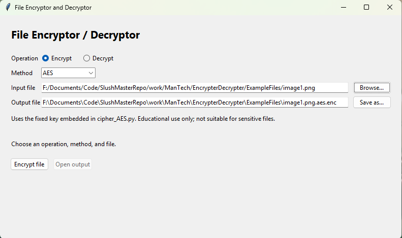

What It Is
The File Encryptor / Decryptor is a small Tkinter desktop application for encrypting or decrypting files using AES, Base64, TDES, and XOR implementations. It works with any binary file, including text and images, and always leaves the original input file unchanged.
It grew out of learning basic data encryption and decryption algorithms during a ManTech internship, and the ciphers are educational implementations rather than tools for protecting sensitive data.
How It Works
Each method lives in its own module, and the GUI picks the right one based on the chosen operation and method:
- AES: AES-EAX file encryption with authenticated decryption. No key is requested; it uses a fixed key embedded in the source.
- B64: Base64 encoding and decoding. No key is used, and it is an encoding, not encryption.
- TDES: Triple DES using an ASCII passphrase. The same passphrase is needed to encrypt and decrypt.
- XOR: XOR with a random one-byte key generated during encryption. The key is shown after encryption with a copy button, and decryption needs that integer from 0 through 255.
File Handling
Operations run in a background thread, so the window stays responsive. Results are first written to a temporary file, and the destination is replaced only after the operation succeeds. New encrypted and decrypted files are always written to the ExampleFiles folder beside the program, regardless of where the input file lives, and you are asked to confirm before an existing output is overwritten.
Security Limitations
AES uses a hardcoded key, TDES is a legacy cipher and the current implementation does not authenticate ciphertext, XOR has only a one-byte key, and Base64 is only an encoding. Wrong keys for unauthenticated formats may produce output without an error. For real security needs, use a maintained, authenticated encryption format.
How To Use
Requirements
- Python 3.10 or newer
- Tkinter (included with the standard Windows Python installer)
- PyCryptodome, installed from
requirements.txt
Setup and Launch
From the repository root in PowerShell:
Set-Location "work\ManTech\EncrypterDecrypter"
py -m venv .venv
.\.venv\Scripts\python.exe -m pip install -r requirements.txt
.\.venv\Scripts\python.exe file_crypto_gui.py
Using the App
- Choose Encrypt or Decrypt.
- Choose AES, B64, TDES, or XOR.
- Use Browse to pick the input file. The output field is filled with a suggested name in
ExampleFiles; edit the filename or use Save as... to choose another name in that folder. - Enter a key if the selected method needs one (a passphrase for TDES, or the saved number for XOR decryption), then start the operation.
- On success, use Open output to open the result with its associated application.